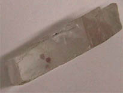
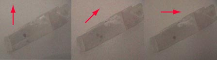
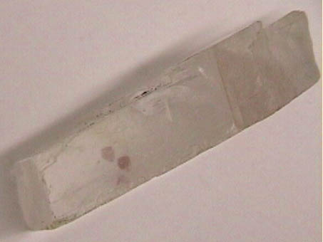

Calcite
|
The mineral calcite, also known as Iceland spar, is a widely used material in optics because of its birefringence. Its birefringence is so large that a calcite crystal placed over a dot on a page will reveal two distinct images of the dot. One image will remain fixed as the crystal is rotated, and that ray through the crystal is called the "ordinary ray" since it behaves just as a ray through glass. However, the other image will rotate with the crystal, tracing out a small circle around the ordinary image. This ray is called the "extraordinary ray". |
The indices of refraction for the o- and e-rays are 1.6584 and 1.4864 respectively. This gives total internal reflection critical angles of 37.08° for the o- and 42.28° for the e-rays when in contact with air. This means that for any angle between these two values, the o-ray will be totally reflected but the e-ray will be partially transmitted. This gives linear polarization since only the e-ray emerges.
Calcite is used in polarizing prisms such as the Nicol prism, the Glan-Foucault prism, and the Wollaston prism.
| 
|
A simple demonstration of the large birefringence of calcite is to put a dot on a piece of paper and put the calcite crystal over it. You see two distinct dots. By putting a piece of polaroid over the crystal and rotating it, you can show that the two images of the dot are made up of light polarized at 90° with respect to each other. Rotating the polaroid will show one dot, then both in transition, and then just the second dot as you reach 90°.
|

The video segment below shows the successive disappearance of the two dots as a sheet of polaroid is rotated over them.

|
Index
Polarization concepts |